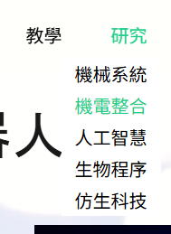
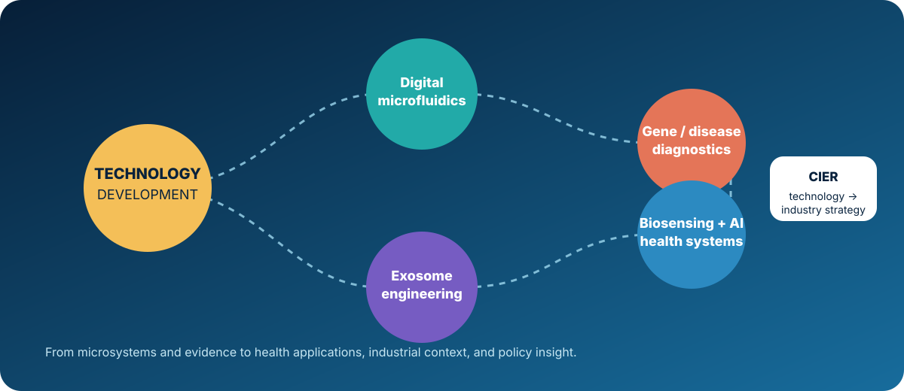

RESEARCH
RESEARCH CLASSIFICATION

MECHANICAL SYSTEMS FROM THE EARLY LAB SITE
AI & INNOVATIVE MEDICAL DEVICES
HOW THE DIRECTIONS CONNECT

CONNECTED DIRECTIONS
Digital microfluidicsAcoustofluidicsWearablesAI healthcareSoft roboticsExosome engineering